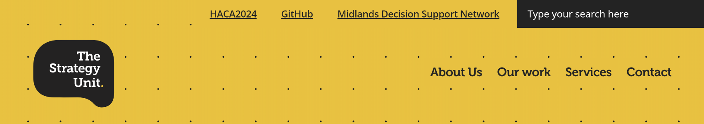
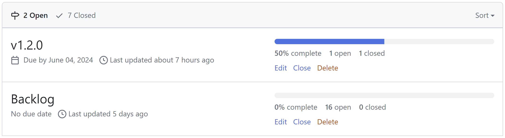
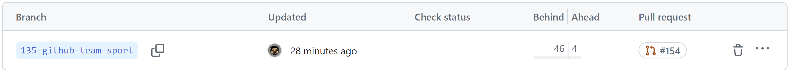
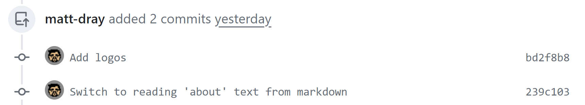
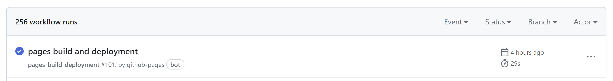

GitHub as a team sport
DfT QA Month
May 23, 2024
tl;dr
- ‘Quality’ isn’t just good code
- Teamwork makes the dream work
- GitHub is a communication tool
About us
The Strategy Unit (SU)

GitHub at the SU

This talk
What this is
- Low-tech, no code
- Tips and etiquette, not directives
- What’s been working for us
- We should maintain quality
- We need redundancy
- Standardised processes can help
‘Rules’
- It’s the spirit that counts
- Do as I say, not as I do
- Know why you’re breaking the rules
What we do
GitHub flow
- Create a repository
- Write issues
- Plan
- Create a branch
- Make a pull request
- Review
- Release
Repositories
Issues
- Aren’t just ‘problems’
- Use labels, including MoSCoW
- Explain the need, be informative
Plan

- Talk, review and reflect
- Use labels to prioritise
- Sort into milestones
Branches

Commits

- Don’t commit to main!
- ‘Small, early and often’
- Make messages meaningful
Pull requests (PRs)
Reviewing PRs
Releases
GitHub is a team member

We:
- are a small team
- assume specialist roles
- work in sync
The bottom line, actually
- Communicate
- Help each other
- Be kind